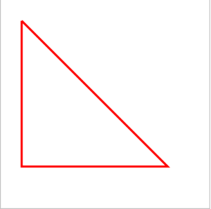

U ovom delu potrebno je samo da unesete html5 canvas element. Podesićemo njegovu širinu i dužinu na 500 px i id na tutorijal. U body tagove upišite:
Korak 1
<canvas id="tutorijal" width="500" height="500">
Vas pretrazivac ne podrzava canvas html5 element
</canvas>
Korak 2 – css definisanje stilova
Zatim ćemo definisati vidljive granice pomoću css stila border. U head tagove upišite style tagove i unesite sledeći kod:
canvas {
border: 2px solid #c3c3c3;
}
Korak 3 – JavaScript crtanje
Kroz JavaScript ćemo definisati mnoge delove elementa canvas. U prvoj liniji koda preuzimamo elelment u promenljivu kako bi lakše radili sa elementom. Zatim definišemo da canvas elemet se prikazuje u dve dimenzije. U body tagove upišite script tagove u kojima unesite sledeći kod:
Funkcija moveTo podešava početnu tačku za crtanje i ima parametre x i y ose. Funkcija lineTo definiše do koje tačke se iscrtava linija, i to se definiše parametrima koje sadrže vrednosti x i y ose. Druga funkcija lineTo povlači liniju iz krajnje tačke prethodne linije, odnosno povlači liniju iz tačke koja je definisana vrednostima x i y ose u prethodnoj funkciji.
canvas = document.getElementById("tutorijal");
cnt = canvas.getContext("2d");
cnt.moveTo(50,50);
cnt.lineTo(400,400);
cnt.lineTo(50,400);
cnt.lineTo(50,50);
cnt.lineWidth = 5;
cnt.strokeStyle = "red";
cnt.stroke();

Renderovani prikaz koda
Jednostavan primer korišćenja funkcije lineTo().
<canvas id="myCanvas" width="578" height="200"></canvas>
<script>
var canvas = document.getElementById('myCanvas');
var context = canvas.getContext('2d');
context.beginPath();
context.moveTo(100, 150);
context.lineTo(450, 50);
context.stroke();
</script>